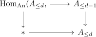

Hom and n-connected map
Proposition
Let $f: X \rightarrow Y$ be an n-connected map and $A$ a CW-Complex with cells in dimension $\leq d$. Then the map
\begin{align*}
\mathrm{Hom}_{\mathrm{An}}(A,f): \mathrm{Hom}_{\mathrm{An}}(A,X) \rightarrow \mathrm{Hom}_{\mathrm{An}}(A,Y)
\end{align*}
is $n-d$ connected
todo: have vibed indices ?
Proof
induction basis
For $A = \emptyset$ this is just the map $* \rightarrow *$. For $A = \coprod_{I} *$, this is just $\prod_{I} f$ which is as connected as $f$ is (cf. product of n-connected maps is n-connected).
induction step
Let $\mathrm{fib} \rightarrow X \rightarrow Y$ be a the fiber, which is <so and so> connected.
First observe
We have a pushout square
\begin{displaymath}
\begin{tikzcd}
\bigcoprod S^{d-1} \rar \dar & A_{\leq d-1} \dar\\
\mbox{} * \rar & A_{\leq d}
\end{tikzcd}
\end{displaymath}which becomes a pullback
